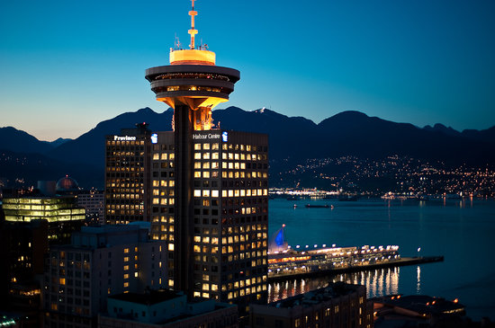
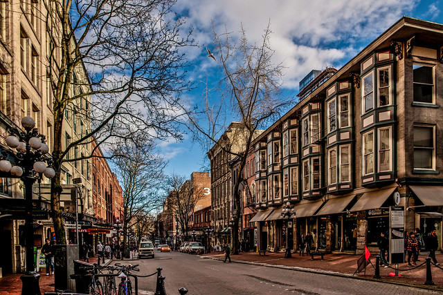
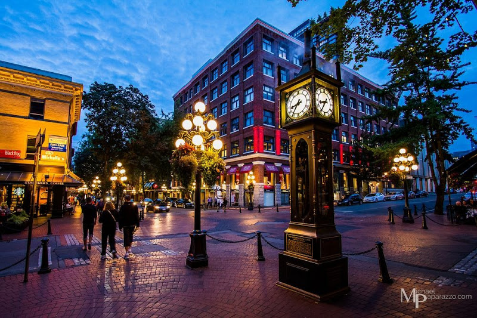
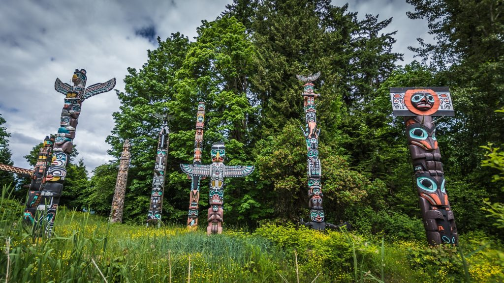
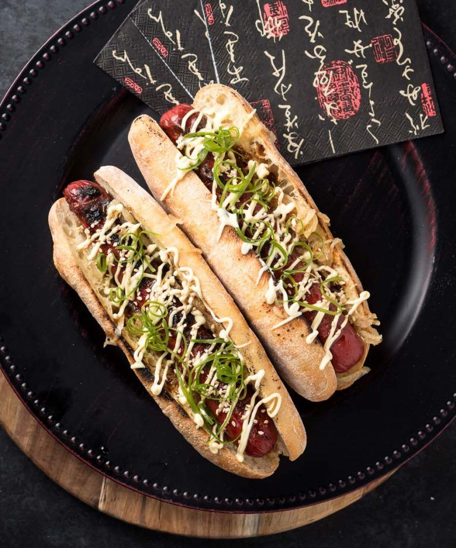

TOURIST ATTRACTIONS
Tourism is a very important industry as it not only generates alot of revenue for an area, which can be used to further develop it, but also provides job opportunities which then result in an increase in the rate of employemt. Moreover, increase in the rate of employemt is directly proportional to the decrease of crime in an area, making the area safer.
The tourism industry in Vancouver, British Columbia, in Canada, generates over $14 billion in total revenue to the Vancouver economy and supports over 100,000 jobs in the process.
NATURAL ATTRACTIONS
STANLEY PARK
This beautiful park has a vastly green landscape with a well paved seawall path. The majority of visitors patiently explore the park , which is 405-hectares, either on foot, bicycle, or horse-drawn carts that are offered for those who prefer a more relaxed experience.


GROUSE MOUNTAIN
With the mountain peak being 1200m above sea level, Grouse Mountain is a very popular ski area in the snowy winters, offers lumberjack shows in the summer and many more thrillful activities for adreneline junkies. The views offered from the scenic chairlift rides are to die for, exposing a magnificent panoramic view of city lights. Bring your friends and family along and have the time of your lives, i promise you would not regret it !


GRANVILLE ISLAND
Granville Island is a headland and shopping district in Vancouver, British Columbia, Canada. Located across False Creek from downtown Vancouver, under the south end of the Granville street bridge, it used to be an industrial manufacturing area once upon a time, but is now a hotspot for tourism and entertainment in Vancouver. Moreover, the area is home to the well known Granville Island Public Market, which is the pride and joy of the island.


ENGLISH BAY
Located between Gilford st and Bidwell st, English Bay is on one of the city's beautiful beaches. English Bay, also called "First Beach", reveals some of the most stunning views out over the ocean. One of the best universities in Canada, the University of British Columbia, as well as the south pennisula of Vancouver can be seen from there too !


Apart from being a popular outdoor area, English Bay offers shopping areas as well as high-end restaurants. The Celebration Of Light, one of the most popular events of the summer, involving spectacular firework shows, takes place at this Bay as well.
QUEEN ELIZABETH PARK
Do you love floral displays ? are you looking for a beautiful location to have your wedding pictures taken ? if your answers to either one of these questions was yes, the Queen Elizabeth Park is the place to be. As it's covered in magnificent gardens, and having different bird species chirping around, offering a fairytail type experience, this park is a great choice to visit to take a breather from all life's problems and relax while embracing nature.


PURPOSE BUILT ATTRACTIONS
VANCOUVER AQUARIUM
Located in Stanley Park, the Vancouver Aquarium is not only a major tourist location for Vancouver, but also a centre for marine research, conservation and marine animal rehabilitation , as well as ocean literacy education. Having a whooping 58,000 animals, it's a given that people taking a stroll in Stanley Park will most likely pass through the Vancouver Aquarium.


MUSEUM OF ANTHROPOLOGY
Being famous for it's displays of world arts and cultures, mainly focused on British Columbia First Nations, the Museum of Anthropology is a major tourist destination. Located at the University of British Columbia (UBC) campus in Vancouver, British Columbia, the museum is a research and teaching museum where UBC courses in art, anthropology, archaeology, conservation and museum studies are given.
Established in 1947, the museum has about 50,000 ethnographic objects, along with a shocking 535,000 archaeological objects in it's building alone !


CAPILANO SUSPENSION BRIDGE
Opened in 1889, the Capilano Suspension Bridge was Vancouver's first tourist attrraction and has been thrilling visitors ever since. This wobbly bridge lies above the Capilano River in the district of North Vancouver, British Columbia, Canada. Being 140 metres long and 20 metres above the river, the bridge leads into an activity park filled with forest trails and a treetop walk through massive trees. This private facility also has a collection of totem poles and a transparent suspended platform called the Cliffwalk. Evident in the annual amount of visitors, which is over 1.2 million, this bridge is admired by people all over the world, making it a worthy attraction for everyone to experience.


THE VANCOUVER LOOKOUT
Want to see the spectacular city of Vancouver from up above ? if yes then the Vancouver Lookout is the place to be. This weirdly shaped, 167 metre above sea level UFO-looking building is found in downtown Harbour centre and offers breathtaking views of Vancouver and the North Shore Mountains. For the price of one ticket, you could go back up there anytime, the whole day. Moreover, for the best experience i recommend going there just before sunset as the colors of the horizon produced during the sunset are to die for !
HERITAGE ATTRACTIONS
CHINATOWN
Given the title of "Nation Historic Site" in 2011, Chinatown Vancouver is one of the largest chinatowns in the world. The old buildings and window art tell stories about chinese ancestors, with the atmosphere around it giving off very cultural vibes, not to mention the distinguished cuisine overed.

GASTOWN
Covering twelve city blocks and being the home of approximately 108,128 residents, Gastown is one of the most densely populated areas in the lower mainland. Formally known as "Gassy Town" after a talkative man called John Deighton, also known as "Gassy Jack", this district is the oldest part of the city but is filled with beautiful restaurants, art galleries and shops regardless, while maintaining the antique nature of the town.
Built in 1977 at the corner of Cambie and Water streets in Vancouver's Gastown, by Canadian clockmaker Raymond Saunders, the steamclock was considered either the first or second steam-powered clock ever built. A steam clock is a clock that is powered by a steam engine. The Vancouver steam clock got it's steam from part of Vancouver's distributed steam heating system.
FIRST NATIONS ART AND TOTEM POLES
The nine totem poles located at Brockton Point, to the east of Stanley Park, are the most visited tourist attraction in British Columbia. The collection of these hand-made totem poles began in the 1920s, when the park board bought 4 totems from Vancouver Island's Alert Bay. More totems were purchased from the Queen Charlotte islands and the British Columbia coast Rivers Inlet to celebrate the Golden Jubilee in 1936. The poles were moved to the more accessible and attractive Brockton Point in the 1960s, and have been there ever since. The purpose of these totem poles was to pay respect to the original settlers of the beautiful land known as Vancouver.

VANCOUVER SPECIALITY CUISINE
JAPA DOG
If you are a fan of spicy food, these Japanese-inspired hotdogs are a must try. Being sweet, salty and quite spicy, these hotdogs are almost guaranteed to make your taste buds dance. You can find this dish in multiple locations across downtown Vancouver.
B.C. ROLLS
Grilled, tangy and chewy salmon skin is one consistent ingredient used when preparing this British Columbia speciality sushi roll. These can be found at about every place that serves sushi in Vancouver.

SALMON CANDY
Smoked salmon drizzled with maple syrup or honey, sounds delicious right ? this mouth watering snack is loved all around Vancouver and can be found at Fish Counter on main street or even Granville Island Public Market.

INDIGENOUS CUISINE
Fiddleheads, elk, and other native west coast dishes, are proof that the land was affluent with savoury and diverse ingredients and flavours before it was names Vancouver.
DIM SUM
If you are looking for well made,delicious chinese cuisine in Vancouver, Chinatown is the place to be. Floata Seafood Restaurant in chinatown is known to have the best Dim Sum in the area. Dim Sum is a Catonese style of steamed dumplings prepared in small portions, filled with a range of ingredients and is often enjoyed for breakfast and lunch.

These are just a selected few of delicious cuisine that are offered in Vancouver. To obtain the best experience and increase your food palate massively, i recommend you try as many exotic dishes as you can to truly experience the life of a Vancouverite!
LIFESTYLE DIFFICULTIES
Apart from all the amazing things Vancouver has to offer, unfortunately, like every other city, it has it's flaws too.
COST OF LIVING
Vancouver is undoubtly one of the most expensive cities in Canada, together with Toronto. Although unlike Toronto, Vancouver is also the most expensive city in North America.
Regarding housing, rent in particular, is ridicularly high. A single-bedroom apartment in the city center costs approximately 2000 CAD on average (1500 USD). Moreover, mobile phone plans, transport, which will be around 100 CAD (75 USD), groceries, as long as other monthly expenses are said to be more expensive as compared to the rest of Canada.
WEATHER
According to the majority of Vancouver residents, the fact that it rains most of the year can be regarded as one of the toughest things about living there. They say the wet and freezing climate can be unbearable, regardless of how long you have living there.
JOB OPPORTUNITIES
As Vancouver is a fast growing city, the job market has quickly gotten saturated, making it really difficult to find a well paying job, regardless of the qualifications you have acquired.
RELATIONSHIPS
Being quite a small city, most people living in Vancouver have known each other for as long as they can remember, dating back to their middleschool days. This results in people sticking with the same people they grew up with, making it quite difficult for people who are new in town to form relationships.
POSITIVE ASPECTS
Although it may look like Vancouver is not an ideal place to settle in, that is definately not the case. Not only is the cost of living high, but also the standards of living, which is the quality of life.
The people of Vancouver, Vancouverites, enjoy high wages with the average annual salary being about 75,000 CAD (56,000 USD). In addition, the quality of the healthcare system is magnificent, covering everyone who legally resides in British Columbia through the Medical Services Plan (MSP). Residents only have to pay a monthly premium, which is deducted from their wages, which provides coverage for all health related costs.
One of the perks of the horrible raining weather is that when it is raining in the city, out by the mountains, snow will be frequent. Thus, snow sports like snowboarding as well as skiing, are practically done all year round!